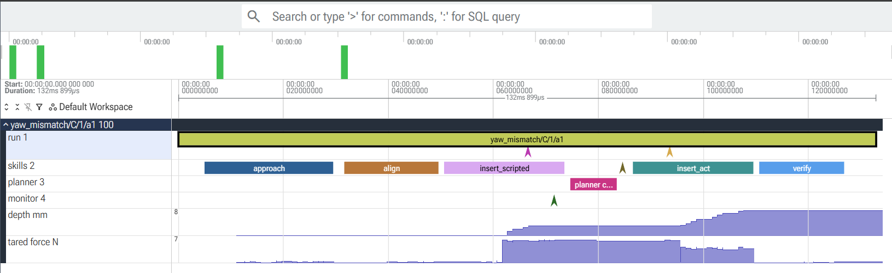

cell-runtime
An agent runtime that makes a cable-insertion robot know when it has failed, recover, and measure what that recovery is worth. Known failures are handled by a behaviour tree; only the ones nobody classified go to a language model, and its answer is checked before anything moves.
What it is
The robot and its policies come from the AI for Industry Challenge simulation (Gazebo, a UR5e arm, ROS 2 Kilted). Nothing is retrained. The project is the layer around them: runtime, state, failure handling and evaluation.
Five rules the design keeps
Known failures are deterministic
The Monitor classifies a failure; a known class goes to the tree's recovery, with budgets. Only an unclassified failure reaches the model.
Everything is an event
Each step appends an event; runtime state is a fold over them. Any run can be replayed step by step, and the state at any step rebuilt.
The core is ROS-free
Runtime, executor, Monitor, planner and eval import nothing from ROS. The simulator lives behind an adapter, so the core tests run on any laptop and in CI.
Model output is untrusted
A decision is validated against a schema and the skill registry before it runs. Invalid output, a timeout or a spent call budget is an event, not a crash.
The eval is deterministic
Same scenario and seed give the same result on the mock. Settings face identical faults and differ only where recovery starts; every extra success must show a recovery in its log.
The model path
When the Monitor sees a failure it cannot name, the runtime does not guess and does not let the model drive the arm. The path is:
- UNKNOWN verdictThe Monitor's rule fired, but no known failure class matches its evidence.
- HoldThe arm holds; on the mock the simulated clock stands still while the model thinks.
- One model call, boundedA wall-time deadline (30 s by default; the call is cancelled at it), a cap on calls per command, checked before an eval starts, and no hidden retries.
- ValidationThe answer must be one of
switch_skill,retry,abortorescalate, name a skill the registry has and whose preconditions hold, and fit the remaining budgets. - A bounded action, or a hand-offThe tree runs the decision; escalate ends the run for a person to look at. Prompt, raw answer, model id, tokens and latency are all in the event log.
The provider is NVIDIA NIM through the openai SDK, installed as an optional extra; the core, the tests and CI run without it, without a key and without network. The key is read from the environment only and never reaches the log, a message or a report.
Smoke call, 9 November 2026
| Model | Result |
|---|---|
nvidia/nemotron-3.5-lightning-30b-a3b | Answered through the decide tool: switch to insert_act, the answer that works for this failure. Valid. 8.1 s, 1,182 prompt and 585 completion tokens. |
nvidia/nemotron-3-super-120b-a12b | HTTP 404 for this account, though the model is listed. |
One call shows the path works end to end. How often the model is right, and whether it beats a simple policy, is what the Phase 3 eval measures.
One run, as a trace
cellrt trace <run> turns a run's event log into a Chrome trace for Perfetto: spans for the run, each skill and each planner call, the Monitor's verdicts as instants, and tared force and depth as counters.

insert_scripted stalls at the port: force steps up, depth stops. The Monitor calls it UNKNOWN, the planner switches to insert_act, and the plug goes in. This trace used a scripted model client, so the planner span is a few milliseconds; a trace from the real model will replace it.Phase 0: the mock eval
Seven scenarios, three settings, 20 seeds each: 420 runs in about 45 s on a laptop. A has no recovery, B recovers known failure classes through the tree, C adds a planner for UNKNOWN (rule-based here).
| Setting | Runs | Success | pass^5 | Recovery | Unsafe | Planner calls / task | Classification |
|---|---|---|---|---|---|---|---|
| A | 140 | 14.3% | 14.3% | 0.0% | 0 | 0.00 | 100% |
| B | 140 | 65.7% | 45.4% | 60.0% | 0 | 0.00 | 100% |
| C | 140 | 80.0% | 59.7% | 76.7% | 0 | 0.14 | 100% |
First run in the simulator
The three sample tasks of the AIC configuration, no injected faults, on a GCP VM with an L4 GPU. The runtime reported 0 of 3. The scorer's own insertion events told a different story:
| Task | Port | Runtime said | Scorer saw | What happened |
|---|---|---|---|---|
| 1 | SFP | INSERT_STUCK | inserted | False positive: the plug was already seated and pressing on its seat. |
| 2 | SFP | INSERT_STUCK | inserted | The same. |
| 3 | SC | INSERT_STUCK | not inserted | True positive: the plug jammed at the port entrance. |
A seated plug and a jammed plug give the same force and progress signals, so neither insertion rule can tell them apart. The fix is to judge by height, and the check that should have said "seated" demanded 10 mm of depth where a seated plug sits at the port frame. Cancellation worked: a cancelled goal stopped the arm and the next goal waited for it. Time over 20 N agreed with the scorer's force penalty, though no run came near the limit. The expert policy scored about 92 on the same tasks.
What is real, and what is not yet
- The mock scenarios, including the Phase 3 ones, and their right answers are designed by us. Results on them say so.
- In the simulator, the skills and the Monitor read ground-truth geometry. The competition's submission environment blocks it; this project uses it for development and states it.
- Phase 1 has not reached 3 of 3 tasks on its own judgement yet.
- The model's eval on the Phase 3 scenarios (no recovery, the rule planner, a fixed retry-then-abort policy and the model) is next. If the model does not beat the simple policies, the results will say that.